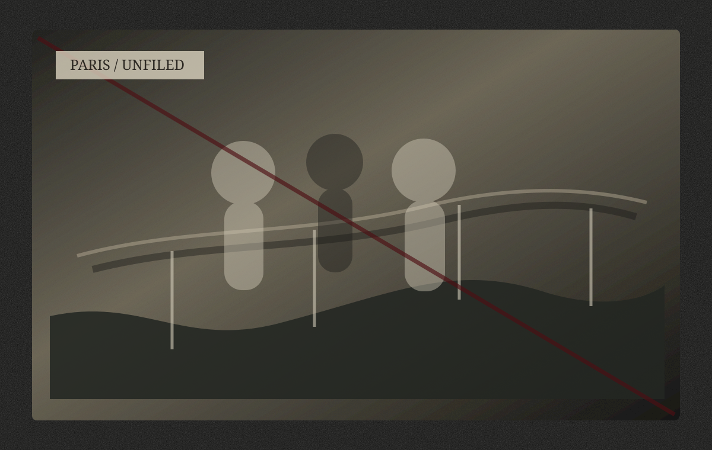
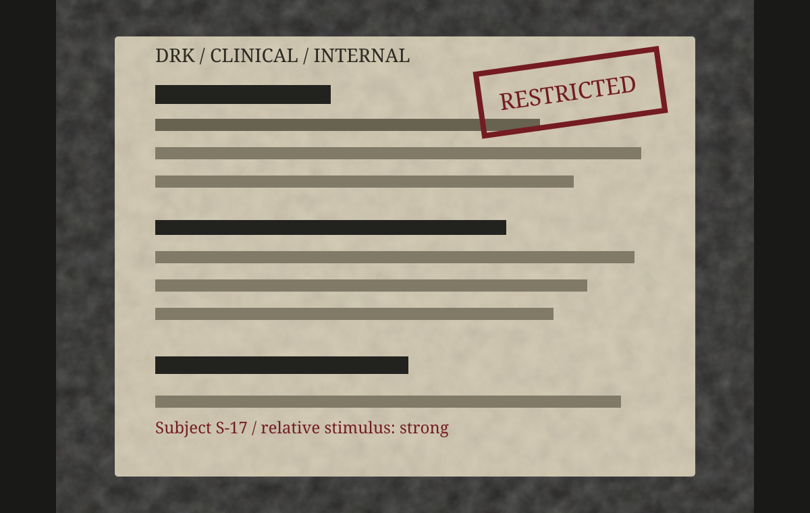

无资格的人
我没有资格整理冯峰的遗稿。
这句话写在前面，并不是谦辞。谦辞总还盼着别人反驳，我不盼。知道内情的人若还活着，多半会说我连碰那些纸的资格也没有。他们说得对。
皮箱送到我这里，是二〇一〇年十一月的一个下午。北京已经冷了，天色灰得很低，像一块多年没有洗净的纱布，罩在窗外那些楼顶上。送箱子的人没有留下姓名，只叫我签收。我看见寄件栏里空着，收件栏却把我的名字写得很清楚：张军晓。
那三个字，我认得。可我很久没有愿意认它们。
皮箱是旧的，深褐色，边角磨得发白，锁扣处有一道浅浅的刮痕。我一眼就知道它不是冯峰的东西。冯峰不喜欢这种带着旧派气味的箱子，他用东西总要干净、利落、没有多余装饰，像他写法律意见书，连一个形容词都嫌浪费。这个箱子更像冯任先生会留下的物件，也像某个长期在各国机场、旅馆、办公室之间辗转的人最后能信任的容器。
我没有立刻打开。
我把它放在客厅中央，自己在沙发上坐到天黑。期间电话响过三次，我没有接。水烧开过一次，又冷了。窗外有人在楼下吵架，后来也停了。北京的夜总是这样，把许多声音吞下去，吞得像从来没有发生过。
我知道箱子里大概是什么。
冯峰死后，很多人找过那批材料。有人说那是证据，有人说那是遗物，有人说那是危险品。说法不同，意思差不多：那些纸若还在，活着的人就不能安稳。
我就是活着的人之一。
我活着，并不是因为我比冯峰更该活。这个道理我后来用了很久才敢写出来。人总喜欢替自己的幸存找一点理由，仿佛只要理由足够复杂，活着就不那么像一种偶然，或者一种亏欠。可事实很简单：冯峰和陈菲死的时候，我在另一条路上，带着另一份备份材料，按原计划去见一个原本不该相信的人。
计划是我安排的。
这句话也该写在前面。


我用桌上的裁纸刀撬开锁扣时，手有些抖。锁并没有真正锁死，只是扣着，仿佛箱子的主人知道它迟早会被我打开，也知道我会拖延，拖延到最后，还是会打开。
箱子里没有想象中的血腥气，也没有电影里那种惊心动魄的秘密。只有纸，很多纸，按年份分好，用细绳扎着。纸张边缘已经有些卷起，有些页脚被水泡过，又干了，留下暗黄色的痕迹。最上面是一只牛皮纸袋，袋口用蓝色圆珠笔写着两个字：
遗稿。
那不是冯峰的字。
冯峰的字瘦硬，横竖都像有意见。那两个字却写得圆，笔画收得很轻。我后来才知道，是陈菲写的。
不是在他死后。
是在他们最后一次离开北京以前。那时冯峰还活着，就坐在她对面，手边放着一只没有喝完的纸杯咖啡。他们把几个月里陆续写下、录下、藏下来的东西分开装好：冯峰的手稿，陈菲的录音卡，孙明留下的档案残页，巴黎照片，还有那枚旧钥匙。陈菲拿起牛皮纸袋，在袋口写下“遗稿”二字。
我不知道冯峰当时有没有阻止她。
也许没有。到了那一步，他们大概都明白，有些字不是写给活人看的，而是写给活人侥幸不能回来以后看的。陈菲在冯峰还活着的时候，已经替他写下了“遗稿”。这比死后整理更残忍。
我把牛皮纸袋拿出来，下面还有三个文件夹。
第一个文件夹贴着英文标签：DRK / Clinical / Restricted。里面是临床试验文件、内部邮件、风险评估表和一些我至今不愿多看的编号。
第二个文件夹没有标签，只在封面夹着一张巴黎旧照片。照片上有三个年轻人。左边的女人我后来知道是孙晨，右边的男人是 Jeff Dion，中间那个女人，冯峰曾经恨过她，叫过她杨可，也叫过她 Coco Yang。到最后，他才叫她母亲。
第三个文件夹很薄，里面是陈菲的录音转写、几张她手写的便签、一份供词复印件。便签上有一句话：
如果他没写完，别替他写完。
我看了很久。
她没有写我的名字，但我知道那句话是给我的。陈菲一直比冯峰更早知道我是什么人。她也比冯峰更晚放弃我。一个人若同时被两种信任照过，再去背叛，就不能说自己只是被黑暗吞了；他原本见过光。
箱子最底下有一把钥匙。
很普通的钥匙，银色，柄上贴着旧胶布，胶布上写着一个已经模糊的“张”。我认得它。那是冯峰出国前留给我的备用钥匙。
他说，屋里有些书和冯青的药，冯任老师有时候顾不过来，你离得近，帮着看看。
他那时没有说“我信你”。冯峰不爱说这种话。他把钥匙递过来，像递一份材料，眼睛看着别处。我接过时还笑他，说你这人真麻烦，拜托别人都像签委托协议。他没有笑，只说，别弄丢了。
我没有弄丢。
我只是弄丢了比钥匙更不该丢的东西。
很多年后，那把钥匙已经打不开任何门。锁早换了，屋子也不在了。冯任先生带着冯青搬过几次家，后来我去看他们，冯青坐在窗边，手里捏着一朵干花，不认得我。她问我是不是送药的人。我说不是。她又问，那你是不是来找小峰的？
我说，是。
她笑了一下，说，小峰被风吹走了。
冯峰确实被风吹走了。陈菲也是。孙明也是。很多人都被吹走了。剩下的人站在原地，衣服上落满尘土，还要装作自己只是路过。
我不能再装了。
所以我整理这些文字。
不是为了替冯峰申冤。后来那些案子已经有了判决，至少在纸面上有。黎剑被判刑，黎楠没有像他父亲希望的那样全身而退，Mark Fishman 入狱，DRK 的董事会被起诉，Jeff Dion 死于一场至今说不清楚的飞机失事。新闻把这些称作“跨国医药腐败案重大进展”，称作“监管合作的里程碑”，称作“公共利益的胜利”。
我看见这些词时，常常想起冯峰。
他年轻时很相信词。法律、证据、正义、公共利益、程序。这些词在他那里不是装饰，是可以住人的房子。后来他一间一间走进去，才发现里面早有人死过。
也不是为了替自己辩白。
我知道我这一生最擅长的就是辩白。我可以说我是被逼的，可以说我起初不知道事情会变成那样，可以说我也救过他，可以说如果没有我，有些证据根本送不出去。这些话都不完全是假话。正因为不完全假，才更危险。
半真半假的话最会救人，也最会放过人。
我不想再被放过。
冯峰在遗稿里有些地方写错了。他记错过年份，误会过我的动机，也把一些不是我做的事算到我头上。我原本可以删去，或者在旁边加注，说这里不实，说我没有那么坏。可是我删去一行，便像替自己脱去一件血衣。
所以我没有删。
冯峰写错的地方，我保留。
冯峰不知道的地方，我补上。
这样，若有人恨我，至少恨得完整。
我和冯峰认识时，他还不是后来报纸上写的那个“青年法律专家”，也不是 DRK 案里的关键证人，更不是某些人嘴里那个被神化了的牺牲者。他只是一个清华学生，瘦，高，话少，眼睛里总像有一道没关严的门。别人觉得他清高，我知道他只是怕麻烦。别人觉得他冷，我知道他是把热的东西藏得太深，深到自己也常常忘了。
第一次一起吃饭，是在学校外面一间小馆。那天他不知从哪里回来，脸色难看得像刚被人从水里捞上来。李余青问了两句，被他一句话堵回去。我也没有问。问有什么用？有些人的痛，问出来只会让他更像被审讯。
我给他点了一碗汤。
很便宜，油大，盐也重。端上来时还冒着热气。我把碗推到他面前，说，先喝，凉了就腥。
他看了我一眼，像是觉得这话粗俗，又像是终于找不到理由拒绝。他喝了半碗，后来把汤里的香菜一根根挑出来。我从那天记住，他不吃香菜。
一个人记住另一个人不吃什么，本来也不算什么。可后来我常常想，若我没有记住这些就好了。若我只是拿钱办事，只是奉命接近，只是冷冷看着他一步步走进局里，也许我现在还能把自己归入坏人那一类。
坏人也有坏人的轻松。
我不是。我记得他不吃香菜，记得冯青害怕玻璃门，记得他第一次胜诉后其实发了烧，记得陈菲来公司那天穿了一件浅色外套，冯峰嘴上嫌她麻烦，却在她走后把她指出的那处合同漏洞看了三遍。
我记得这么多，仍然把他的名字交给别人。
这就是我的罪。
现在，纸都摊在桌上。窗外又起风了。北京的风到了夜里总带着灰，吹得玻璃轻轻响。我坐在这些纸中间，像坐在一间迟到的审讯室里。没有法官，没有律师，没有旁听席。死者不说话，活人也不配请求他们说话。
我只负责把灯打开。
以下是冯峰留下的文字。我尽量保持原貌，只在必要处标明材料来源、年份错误和他生前无法知道的事实。凡是我能证明的，我会写明；凡是我不能证明的，我不替任何人补全。
他没有写完。
陈菲说，不要替他写完。
我听她的。
冯峰的第一页，是写给陈菲的。
那一页很短，纸角有一道褐色痕迹，像水，也像血。我不知道是哪一种。我把它放在最前面，因为他大概本来也是这样打算的。
他写道：
菲，我写这些字的时候，窗外有风。我不知道这风是从北京来，还是从巴黎来，或者只是我自己心里多年的尘土终于被吹起来了。
第一章：母亲死于一场被允许的事故
菲：
我从小就知道母亲死了。
这件事被说得很简单，像户口簿上一行删去的字，像学校表格里“母亲”那一栏后来被我空着。大人们谈到死亡时，常常喜欢用一些轻而软的词，仿佛只要词软一些，死者便不会硌着活人。冯任先生说，母亲是因公殉职。邻居说，你妈妈是好人。学校老师说，你要坚强。
我那时还不懂“因公殉职”四个字的好处。它把许多问题一并挡住了：她因什么公，殉什么职，死在哪里，谁看见她死，尸体在哪里，为什么家里没有她的照片，为什么冯任先生每次听见孙明这个名字，手里的杯子都会停一下。
后来我学法律，才明白一个足够庄严的词，常常能替事实关门。
我第一次问起母亲，是六岁。那天北京下了很大的雨，窗玻璃上都是水，楼下的槐树被风刮得贴向一边。冯青坐在地板上画画，画一间白色的房子，房子中间有一扇很大的玻璃门，门后站着一个女人。女人没有嘴，只有眼睛。
我问冯任先生：“我妈长什么样？”
他当时正在给冯青分药。白色的小药片落在掌心里，像几粒没有化开的雪。他听见我的话，没有立刻回答，只把药片一粒一粒放进小盒子，盖好，才说：“像你。”
这答案太懒，也太残忍。一个孩子不能靠照镜子认识母亲。
我又问：“她怎么死的？”
他说：“事故。”
“什么事故？”
“工作里的事故。”
他说完这句，便不再说了。冯任先生有一种很特别的沉默，不像别人是没有话讲，他的沉默像有许多话挤在门后，只是他用背抵着门，不让它们出来。
那天晚上，冯青把画塞到我枕头底下。她比我大几岁，却总像比我小。她笑起来很好看，眼睛弯着，仿佛什么都不知道；可她有时又会说出一些很老的话，老得不像一个孩子，也不像一个病人。
她小声说：“妈妈没有死。”
我说：“你又胡说。”
她摇头，很认真地指着画里的玻璃门：“她在里面。”
我那时不喜欢她这样。她的话会使家里变冷。一个孩子若已经接受了母亲死去，就不愿再听见母亲可能还活着。死去的人虽然可怜，却安静；活着而不回来的人，才真正令人难堪。
所以我把那张画揉了，扔进纸篓。
多年后我在 DRK 的一份文件里看见“单向观察窗”五个字，忽然想起那张被我揉掉的画。那时我已经三十一岁，坐在一间灯光过白的会议室里，对面的人还在谈风险控制和伦理豁免。我盯着那五个字，手指发冷，仿佛六岁的冯青又从地板上抬起头来，对我说，她在里面。
有些真相并不是来得太晚。
是我们太早把说真话的人当成了疯子。
母亲的死亡证明，我第一次见到是在成年以后。那是一张复印件，纸色发黄，边缘有折痕。死亡日期写得很清楚，一九八二年十一月十七日。死因一栏写着“执行公务期间意外身亡”。公章压在字上，红得很端正。
法律文件最迷人的地方正在这里。它不必使人相信，它只需要使人停止追问。
我那时还不知道，那张证明上的日期至少被改过一次。也不知道在同一个月里，巴黎、纽约、北京之间有几封电报被销毁，有一个女人失踪，有一个男人死在车里，有一个孩子被抱出火场，还有一个女孩从此害怕白药片和玻璃门。
那个孩子是我。
那个女孩是冯青。
至于那个女人，我很久以后才终于知道，她没有死。或者说，她死过一次，又被人用另一个名字叫醒。
可在我的童年里，母亲只是一个空位。
家里没有她的照片。冯任先生说搬家时丢了。这个理由在我小时候可以成立，因为大人有权弄丢许多东西，照片、玩具、承诺和人的来处。后来我才知道，照片不是丢了，是被剪掉了。有几张合影里，冯任先生保存了桌子、窗帘、半截椅背和一只花瓶，却把某个女人的脸剪得干干净净。
干净。
这是我后来最怕的词之一。
制药公司喜欢这个词，实验室喜欢这个词，法院也喜欢这个词。干净的流程，干净的数据，干净的证据链。一个人若被剪掉得足够干净，他就像从未存在过。孙明在我家里便是这样被处理的。
我不知道自己有没有真正想念过她。
一个人无法想念自己不认识的人。我想念的也许只是“母亲”这个词，是别的孩子放学后有人来接，是发烧时有人把手贴在额头，是每年家长会座位上不会总空着一半。冯任先生对我很好，甚至好得谨慎；可谨慎不是母亲。谨慎像一件厚衣服，可以御寒，却不能替人长出体温。
菲，我写到这里，忽然觉得对你也不公平。
你曾问我，为什么我总是把人推到离自己一步远的地方。我当时说，习惯。你说，习惯不是答案，只是拒绝回答的另一种样子。我没有理你。现在想来，你那时已经看见了我身上最陈旧的病：我从小就被教会，亲近的人会消失，留下的人会隐瞒，所以爱一个人最稳妥的方式，便是先替她安排好退路。
我后来对你做的许多事，都可以从这里找到病根。
但病根不是赦免。
我不能因为童年缺了一块，就理直气壮地去伤害你。世界上许多人都有伤口，只有少数人把伤口磨成刀。我不愿承认自己也曾这样做，可遗稿若还要有一点用处，便不能只拿来控诉别人。
母亲死于一场被允许的事故。
这句话不是我小时候听到的那句。小时候他们只说事故。后来我才懂，有些事故之所以发生，是因为有人允许它发生；有些死亡之所以显得偶然，是因为太多人提前把路让开。
一九八二年的那场事故，后来吞掉了很多人。
它先吞掉了我的父亲。又吞掉了我的母亲。再后来，它吞掉了冯青的清醒，吞掉了冯任先生的余生，吞掉了张军晓还可能成为好人的那部分，也吞掉了你。
我是在很久以后才明白，所谓人生，有时不过是童年那场事故的迟到回声。我们以为自己走了很远，读了很多书，去了纽约，到了巴黎，赢过官司，爱过人，最后却还是回到那扇玻璃门前，看见门后站着一个没有嘴的女人。
她没有嘴。
所以我们替她说话。
可是我们说得太晚了。
第二章：冯青的笑
冯青笑起来的时候，很难让人相信她曾经受过伤。
她的笑没有防备，也没有分寸。别人讲一句并不好笑的话，她也会笑得弯下腰，像整个世界终于肯对她好一点。小时候我常常因为她这样笑而难堪。少年人最怕亲人的不合时宜，仿佛旁人的目光会因为她落到自己身上，把自己也照成一个不正常的人。
我为这种羞耻惭愧过很多年。
但惭愧来得太晚，和许多美德一样，只适合活人拿来整理衣冠，不能真正补偿死者和伤者。
冯青不是我的亲姐姐。至少按血缘说不是。她是冯任先生的女儿。可在我记事以后，她就一直在我身边，叫我“小峰”，把饼干掰给我一半，把我不愿吃的胡萝卜偷偷夹进自己碗里。她有时像姐姐，有时像妹妹，有时又像一个守着秘密的老人。
她怕很多东西。
怕白色药片。怕医院走廊尽头的灯。怕玻璃门。怕有人在她睡着时摸她的手腕。
冯任先生说，这是病。医生也说，这是病。病是一个方便的盒子，许多不愿解释的东西都可以放进去。药片放进去，哭声放进去，半夜惊醒放进去，某些不连贯的词也放进去。盒子盖上以后，家里就能勉强过日子。
冯青却总把盒盖掀开。
她会在吃饭时突然说：“药片会说谎。”
冯任先生的筷子便停一下。
她会在冬天的窗上呵气，用手指画一扇门，然后把门擦掉，说：“里面的人不能出来。”
我那时正为考试、作业和同学的笑话烦恼，便嫌她烦，叫她别说了。
她看着我，仍然笑：“小峰怕。”
我当然怕。只是我那时不知道自己怕什么。
家里有一个铁盒，放在冯任先生书房最上面的柜子里。柜门平时锁着，钥匙挂在他腰间，和实验室钥匙、家门钥匙、车钥匙串在一起，走路时轻轻响。那声音贯穿了我的童年。许多年后，我在纽约听见某个实验员的钥匙声，仍会下意识回头。
有一次冯任先生不在家，冯青搬来椅子，非要拿那个铁盒。我说不行。她说，妈妈在里面。
我说：“那是你爸爸的东西。”
她很固执：“妈妈在里面。”
她爬上椅子，身体晃得厉害。我怕她摔下来，只好扶着她。她伸手去够柜门，够不到，急得哭了。那不是普通孩子要糖吃的哭法，她哭得很压抑，像怕惊动什么人。最后我也急了，对她说：“我妈死了。你不要总拿她说事。”
冯青停下来，低头看我。
她脸上还挂着泪，眼神却一下子变得很清楚。那种清楚只出现过几次，每一次都像水底忽然露出石头。
她说：“不是你的妈妈死了，是他们让她忘了。”
我愣住。
然后她又笑起来，像刚才那句话不是她说的。她从椅子上下来，跑去窗边看楼下卖糖葫芦的人，问我有没有钱。
这就是冯青。
她把一句足以改变我一生的话说出来，又立刻把它丢进日常里。因为没人相信她，她也不负责把话说完整。真相经过她的嘴，常常像一条被剪断的线，一头在我手里，一头在很远的黑暗里。
我没有把那句话告诉冯任先生。
不是因为我相信她，而是因为我害怕他听见。小孩子有时也懂得维护家里的虚假和平。只要不问，许多事就还没有发生。只要不说，母亲就仍然是死于事故，冯青就仍然只是病了，冯任先生就仍然只是一个沉默而可靠的养父。
我们都靠这种“仍然”活着。
冯青喜欢画画。
她不会画真正意义上的画。她画的人没有比例，房子没有屋顶，树长得像血管，太阳常常是黑的。冯任先生给她买过很多蜡笔和图画本。她最爱用红色和灰色。红色画门，灰色画风。
我问她：“风怎么是灰的？”
她说：“风从白房子里出来，出来就脏了。”
那时我只觉得这话古怪。后来我见过许多白房子：实验室、医院、药监局会议室、法院走廊、DRK 的接待大厅。它们都很干净，干净到令人放心。人在里面讲话，声音会被墙壁吸走一部分，剩下的就显得专业、克制、无害。
冯青早就知道白色会骗人。
她也怕药。
每次吃药，她都要先闻一闻，再看冯任先生。冯任先生很有耐心，把水递给她，说：“这是维生素。”
她问：“会不会忘？”
他说：“不会。”
她又问：“会不会睡醒少一块？”
他沉默。
我那时听不懂“少一块”是什么意思。以为她说的是身体，或者玩具。后来我在一份试验记录里看见“记忆反应不稳定”“亲属刺激强烈”“建议重新诱导”这些词，才知道她说的少一块，可能是人醒来以后，发现自己心里某个地方被人搬空了，却没有伤口可以给别人看。
冯青有时也正常。
她会给我缝扣子，虽然针脚歪得厉害；会记得我考试日期，比我自己还紧张；会在我发烧时坐在床边，用湿毛巾擦我的额头，擦得太用力，像在擦一块很脏的玻璃。她对我好，好得没有理由。人若被这样对待久了，便容易把它当成理所当然。
我最不能原谅自己的，也许不是后来没有救下她。
而是很长一段时间里，我只是把她当作我需要照顾的人，没有把她当作一个曾经替我保存真相的人。
她说妈妈没有死。她说药片会说谎。她说玻璃后面有人。她说睡醒会少一块。她说陈菲会进玻璃房。
每一句都是真的，或者至少有一部分是真的。可我们听见的时候，只听见病。
菲，你第一次见冯青，是在我公司楼下。她那天穿了一件浅蓝色外套，袖口沾了颜料。她看见你，先是笑，然后忽然不笑了。你后来问我，她是不是不喜欢你。我说不是，她只是怕生。
我又说谎了。
她不是怕生。她是看见了某种我们还没有看见的东西。她拉着我的袖子，小声说：“她会被风吹走。”
你听见了，还笑着问她：“那我要抓住什么？”
冯青想了很久，把手里一颗糖递给你，说：“抓住甜的。”
你把那颗糖放进包里，很久没有吃。后来，在我们最后整理材料的那一夜，我又在你的包里见到它。糖纸已经皱了，边缘发白。我拿在手里，忽然想起冯青那天的笑。
她给过我们很多警告。
也给过我们很多祝福。
只是我们总把警告当疯话，把祝福当孩子气。人就是这样逃过真相的：先贬低说话的人，再原谅自己没有听懂。
冯青的笑，是我童年里最亮的东西之一。
也是后来最刺眼的证据。
第三章：养父的实验室
冯任先生的实验室在化学楼三层。
楼道里常年有一种潮湿的气味，混着酒精、旧木柜、粉笔灰和某些说不出名字的试剂。窗户很高，夏天开着，风也进不来多少；冬天关着，玻璃上结一层薄雾。学生们在走廊里说笑，声音经过那些门牌和瓷砖，变得短而脆。冯任先生不喜欢喧哗。他的门半掩着时，大家会自动把声音放低。
我小时候常去那里等他下班。
不是因为我喜欢化学。一个孩子很难真正喜欢那些瓶瓶罐罐，他喜欢的只是大人允许他进入一个平时不许进入的地方。实验室对我而言，像一座有规则的小城。每只瓶子都有标签，每根管子有用途，每一次反应都有条件。比起家里那些不能问的事，实验室显得诚实得多。
后来我才知道，世上最会撒谎的地方，往往也都有标签。
冯任先生给我讲过剂量。
他说，同一种东西，少一点是药，多一点是毒；有时再少一点，什么也不是，只是一种安慰。
我问：“那怎么知道多少才对？”
他说：“先要知道你想救谁。”
这答案不像科学，倒像一句他不愿展开的旧话。我那时听不懂，只记住了烧杯底部慢慢升起的气泡。透明液体被加热后翻动，像有什么看不见的东西终于忍不住开口。
冯任先生做实验很稳。
他的手指修长，指甲总剪得很短，袖口扣得严。他拿滴管时，神情比许多医生给人开刀还谨慎。有一次我不小心碰倒一只空试管，他立刻抓住我的手腕，把我拉到一边。那动作太快，几乎不像一个大学教授。
我被吓到，问：“又没东西。”
他说：“你怎么知道没东西？”
那是他教我的第一课：危险不一定有气味，不一定有颜色，也不一定会在标签上写“危险”。
后来我进入制药行业的法律世界，见过太多没有气味的危险。它们写在合同附录里，藏在临床试验排除标准里，藏在会议纪要的被动语态里，藏在“建议继续观察”这类温和句子里。冯任先生若看见，大概不会意外。他比我早很多年就知道，毒物最好的伪装不是苦味，而是规范。
他从不让我碰白色粉末。
哪怕是最普通的无机盐，他也会把瓶子拿远。我问为什么，他说：“白色最容易让人放心。”
“放心不好吗？”
“太放心就不好。”
我那时觉得他古怪。后来我看见 DRK 的宣传册，封面是白色的，医生的衣服是白色的，实验室是白色的，连笑容都像被漂白过。白色一多，人便忘了问里面装的是什么。
冯青很少进实验室。
她一进来就不舒服。她会捂着耳朵，说这里有声音。其实实验室很安静，只有通风柜低低地响，偶尔有水滴落进水槽。冯任先生便让她在走廊等，给她一张纸画画。她总画门。实验室的门，玻璃门，很多门。每一扇门后面都有一只眼睛。
冯任先生看见那些画，会把它们收起来。
他从不扔。
这一点我很晚才意识到。冯任先生看似不信冯青的话，却保存了她几乎所有画。那些画被夹在旧报纸里，按年份放好，像某种没有人承认的证词。一个父亲若真的认为女儿只是在胡言乱语，不会这样保存她的疯话。
他不是不信。
他只是不能说信。
冯任先生有许多不能说。
比如他为什么会收养我。比如他与孙明究竟是什么关系。比如他为什么从一个原本不该出现在大学化学楼里的人，变成了一个每天按时上课、批改实验报告、给学生讲安全规范的教授。比如他为什么总在半夜检查门锁，为什么会在陌生车停在楼下时站到窗帘后面，为什么有一年冬天忽然带我和冯青搬家，只说原来的房子管道不好。
我小时候以为大人的生活本来就有很多秘密。
长大后才知道，有些秘密不是生活，是战场撤退后没有清理干净的弹片。
实验室里有一只旧柜子，上面贴着“废弃样本”四个字。柜门总锁着。有一次我问里面是什么，冯任先生说：“不能再用的东西。”
“为什么还留着？”
他看了我一眼，说：“因为不能再用，不等于可以忘。”
这句话我记了很多年。那时我以为他说的是化学样本。后来我才知道，他也许说的是人，是案子，是死去的同事，是失踪的孙明，是被试药后醒来却再也回不去的冯青，也是被他抱回来的我。
冯任先生教我不轻信结论。
他说，看报告要看谁写的，看数据要看谁删的，看实验要看失败的次数。成功总会有人抢着解释，失败才最接近真相。
这话后来帮过我很多次。
也害过我。
一个人若习惯了怀疑，就很难再单纯地爱人。我怀疑合同，怀疑证词，怀疑会议记录，怀疑每一个靠近我的人。张军晓说我这样活着太累。我说，不累就会死。他笑我，说你这人连聊天都像在交叉询问。
你也说过类似的话。
你说，冯峰，你能不能不要每次听我讲话都像在判断证据效力。
我当时没有回答。其实我听见了。我只是不会改。冯任先生教我活下来的方法，后来变成了我伤人的方法。谨慎、怀疑、控制、提前安排退路，这些东西救过我，也隔开了你。
养父留给孩子的，不只是一条命。
还有活命时形成的姿势。
冯任先生并不温柔。
至少不是通常意义上的温柔。他不会说好听的话，不会拥抱人，不会在我考第一时显出太多高兴。他的奖励通常是一支新钢笔，或者一本书，扉页上写日期，不写祝福。可我发烧时，他会整夜坐在床边，隔半小时量一次体温；冯青尖叫时，他会先把所有玻璃杯收起来；家里电灯坏了，他会当天修好，因为冯青怕黑。
他把爱做成了程序。
这听起来冷，可对我们那样的家来说，程序有时比热情可靠。热情会累，会忘，会在危险来时哭出声。程序不会。门锁检查三遍，药盒按日分好，陌生电话不接，窗帘夜里拉严，外出路线不重复。这些规则构成了我的童年，也构成了我后来性格里最硬的部分。
我曾经怨恨他。
尤其在知道母亲还活过以后。我问他，为什么不告诉我。问得很凶，像审一个早已败诉的人。他站在实验室的窗边，背后是那只旧柜子。他老了，肩膀比我记忆里窄。很久以后他说：“我不知道她是不是还记得你。”
这句话比“我不知道她是不是活着”更残忍。
活着只是医学问题。记得，才是人的问题。
如果孙明活着，却不记得我是她儿子，那我该如何称呼她？如果她记得，却不能回来，那我又该如何理解她？冯任先生把这个问题独自咽了很多年，咽到他的沉默也有了毒性。
实验室窗外有一棵很老的杨树。
秋天叶子落下来，常堵住排水沟。冯任先生会拿一根铁丝去清。我有时站在旁边看，觉得他不像教授，像一个固执的清洁工，试图把某条总会再次堵住的通道弄通。
现在想来，他这一生大概都在做这件事。
清理一点，再堵上。
再清理一点，再堵上。
他没有救回孙明，没有治好冯青，没有阻止我走进 DRK 的网，也没有保护你。若以结果论，他几乎失败了一生。可是人若只按结果被审判，世上许多微弱的善意都没有存放之处。
冯任先生教我，药与毒只差剂量。
他没有告诉我，爱也是。
太少了，人会冷。
太多了，人会窒息。
而有些爱，因为来得太隐蔽，太迟，太像控制，等你终于明白它是爱时，已经没有机会说谢谢。